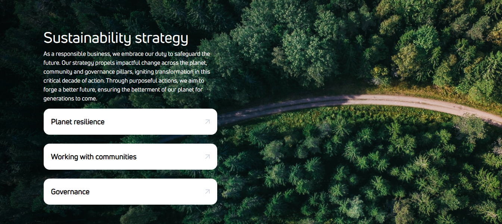
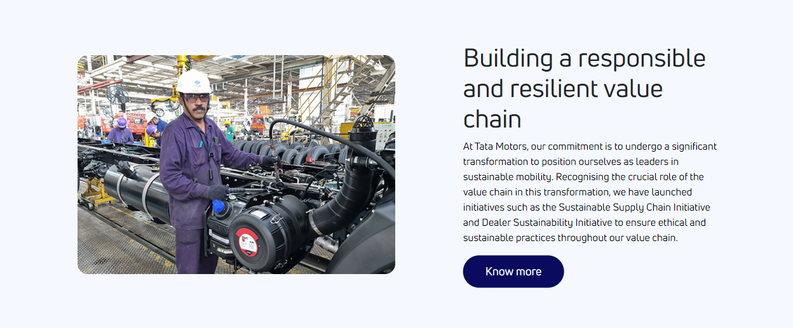

Over Way Of Living
- ustainability is deeply ingrained in our values and integrated into our business strategy. We are committed to driving meaningful change, making responsible choices and leaving a positive legacy for generations to come.

♦Materiality assessment
- We understand the importance of addressing key priorities. Through materiality assessment, we determine the Environmental, Social and Governance (ESG) areas that hold the greatest significance for our business and stakeholders. By engaging with both internal and external parties, we identify and address material issues that have an impact on our value creation.
♦How we create value
- Our business model is rooted in fostering enduring value for all stakeholders. Leveraging our core business strengths, we proactively identify opportunities to address challenges faced by individuals, partners, and society at large. Our decision-making is driven by the needs, preferences, and expectations of our stakeholders, ensuring a strategic and responsive approach.

Previous
4
Next